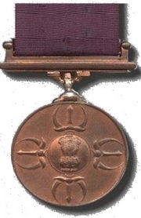

Subedar Joginder Singh Shahnan (26 September 1921 - 23 October 1962), was modern Saini hero who distinguished himself by wining Param Vir Chakra in the 1962 Indo-China war . On 28 September 1936, he was enrolled in the 1 Sikh Regiment and he achieved martyrdom on October 23 1962 during the Sino-Indian war. He was awarded a posthumous Param Vir Chakra. Only 21 soldiers have been able to gain this highest war time military distinction in independent India despite the country having fought as many as four wars. The award is post-independence Indian version of British Victoria Cross and the rarity of its award reflects its prestige and extremely high standard of personal courage and sacrifice it demands. %20%2c%20PVC%2c%20Memorial%20%2c%20Moga.jpg) Subedar Joginder Singh (PVC) Public Memorial outside District Office in Moga, Punjab Family and Upbringing : Another Lion is Born Among the SainisHis father's name was Sher Singh (Shahnan) who belonged to an agricultural Saini Sikh family which had relocated to village Mahla Kalan near Moga from village Munaka of district Hoshiarpur. His mother's name was Bibi Krishan Kaur (Bhela). He married Bibi Gurdyal Kaur (Banga) , who was from a Saini family of village Kothay Rara Singh near Kot Kapura. He went to primary school in village Nathu Ala and to village Daroli for his middle school. Military Action : The Lion Strikes
ਗਗਨ ਦਮਾਮਾ ਬਾਜਿਓ, ਪਰਿਓ ਨੀਸਾਨੈ ਘਾਉ ॥ ਖੇਤੁ ਜੁ ਮਾਂਡਿਓ ਸੂਰਮਾ, ਅਬ ਜੂਝਨ ਕੋ ਦਾਉ ॥੧॥ ਸੂਰਾ ਸੋ ਪਹਿਚਾਨੀਐ, ਜੁ ਲਰੈ ਦੀਨ ਕੇ ਹੇਤ ॥ ਪੁਰਜਾ ਪੁਰਜਾ ਕਟਿ ਮਰੈ, ਕਬਹੂ ਨ ਛਾਡੈ ਖੇਤੁ ॥੨॥੨॥
The battle-drum beats shaking the sky- the wound is inflicted on bullseye ; The warrior enters the ground of battle, for the time of fight is nigh ! Know him only as brave who defends the meek- he who fights himself to pieces and never quits the battle field!
{Sri Guru Granth Sahib, Bani Bhagat Kabir, pp 1105}
During the 1962 Indo-China War, Subedar Joginder Singh commanded a platoon in the Tawang sector of NEFA (North East Frontier Agency). While holding a defensive position on a ridge in Tongpeng La area on Bum La axis, the platoon noticed heavy Chinese concentration opposite Bum La across the McMohan Line on October 20. This was indeed a preparatory to the Chinese advance on Bum La axis on October 23. At 0530 hours on October 23rd, the Chinese launched a heavy attack on the Bum La axis. The intention was to achieve a breakthrough to Tawang. The Chinese attacked the Ridge in three waves, each about 200 strong. The attack was supported by artillery and mortar fire, besides other weapons. The fierce resistance of the Sikh platoon, however, compelled the Chinese to fall back with heavy losses. But they regrouped quickly and launched a fresh attack under the cover of an artillery barrage. However, Subedar Joginder Singh and his platoon stood firm like a rock before the advancing enemy. In this fierce action, the platoon lost half of its men but not the will to fight. Subedar Joginder Singh, despite a wound in the thigh, refused evacuation. His platoon also refused to yield any ground to the Chinese. The last wave of the Chinese attack, which was more determined and more forceful followed next. Now the platoon had very few men left to fight. Subedar Joginder Singh, therefore, manned a light machine gun and killed a large number of enemies. But he could not stem the tide of the Chinese advance single-handedly. The Chinese Army continued advancing with little concern for the casualties. By now all ammunition with the platoon had been exhausted. When the situation became desperate, Subedar Joginder Singh and his men emerged from their position with fixed bayonets, shouting the Sikh battle cry, "Wahe Guruji ka Khalsa, Wahe Guruji ki Fateh." They fell upon the advancing Chinese and bayoneted many to death. Finally better weapons and numerical superiority of the Chinese prevailed and Subedar Singh was captured after this epic battle. He died from his wounds and frostbite as a PoW in Chinese custody. One of his fellow soldiers later recalled that when his Chinese captors wanted to amputate his frostbitten foot, he told them that it would affect his chances of promotion after release and refused to undergo the operation. For his inspiring leadership, steadfast courage and devotion to duty beyond all odds, Subedar Joginder Singh was awarded the highest wartime gallantry medal, the Param Vir Chakra, posthumously. Posthumous Param Vir Chakra : Indian Army CitationSUBEDAR JOGINDER SINGH "Subedar Joginder Singh was the commander of a platoon of the Sikh Regiment holding a defensive position at a ridge near Tongpen La in NEFA. At 0530 hours on 23 October 1962, the Chinese opened a very heavy attack on the Bumla axis with the intention of breaking through to Towang. The leading battalion of the enemy attacked the ridge in three waves, each about 200 strong. Subedar Joginder Singh and his men mowed down the first wave, and the enemy was temporarily halted by the heavy losses it suffered. Within a few minutes, a second wave came over and was dealt with similarly. But the platoon had, by then, lost half its men. Subedar Joginder Singh was wounded in the thigh but refused to be evacuated. Under his inspiring leadership the platoon stubbornly held its ground and would not withdraw. Meanwhile the position was attacked for the third time. Subedar Joginder Singh himself manned a light machine-gun and shot down a number of the enemy. The Chinese however continued to advance despite heavy losses. When the situation became untenable Subedar Joginder Singh and the few men that were left in the position fixed bayonets and charged the advancing Chinese, bayoneting a number of them before he and his comrades were overpowered. Throughout this action, Subedar joginder Singh displayed devotion to duty, inspiring leadership and bravery of the highest order." In words of General V.K. Singh, Former Chief of Staff, Indian Army: "मोगा, पंजाब में जन्मे सूबेदार जोगिन्दर सिंह 23 अक्टूबर, 1962 को तवांग में सिख रेजिमेंट की एक पल्टन का नेतृत्व कर रहे थे। परिस्तिथियाँ अनिष्टसूचक थीं, क्योंकि थोड़ी दूर पर चीनी सैनिकों का बड़ी संख्या में जमावड़ा हो रहा था।
Civilian Honours : A Grateful Nation Remembers its BravestSubedar Joginder Singh (PVC) received highest civilian commemoration in his native town of Moga in 2006 when his statue adorned in full battle fatigue was inaugurated near district DC office. The shipping corporation of India has also honoured this great Saini military hero by naming one of the vessels by the name Subedar Joginder Singh PVC.
Also see: Sainis in Army and Police |
-PVC1866.jpg?height=349&width=214) Subedar Joginder Singh (PVC) (1921-1962) Clan: Saini Sub Clan: Shahnan (Father), Bhela (Mother) Village: Mahla Kalan (Moga), Originally Munaka (Hoshiarpur) Regiment: Ist Sikh Theatre of Action: 1962 Indo-China War Battle Honour: Param Vir Chakra Subedar Joginder Singh commanded a small platoon on a ridge of Tongpeng. when on October 23 , 1962 the Chinese launched a heavy attack on their defensive position. Seeing that Subedar Joginder Singh and his platoon were vastly outnumbered and outgunned and faced an impossible situation, they were given the option of being evacuated by their command. Subedar Joginder Singh turned down this easy way out which would have surely secured his life and chose to fight unto the last with his small platoon. Under his brilliant and inspirational leadership , with Subedar Joginder Singh himself manning the machine gun, the Sikh platoon gunned down hundreds of Chinese soldiers who came in multiple waves. In the final wave Subedar Joginder Singh and his men were completely overwehelmed by the sheer number of the Chinese soliders who swarmed their small checkpost like locusts. Undettered by their numbers and with their ammunition having totally run out, Subedar Joginder Singh led his dare devils into a ferocious bayonet charge against the numerically superior adversary and slaughtered a number of them with their blades in an epic battle until they were completely overpowered by the sheer numbers. Like a true Khalsa Subedar Joginder Singh lived out in thought , word and deed the Sikh dictum of bravery, i.e, "Poorja Poorja Kata Maray, Kabhoon Na Chhaday Khet". Saini Online salutes Thermopylaen valour and sacrifice of this modern Saini hero who also proved his mettle as a true Khalsa of Guru Gobind Singh! -Editorial Note, Sponsors

Param Vir Chakra
"Only 21 soldiers have been able to gain this highest war time military distinction in independent India despite the country having fought as many as four wars since 1947. The award is post-independence Indian version of British Victoria Cross and the rarity of its award reflects its prestige and extremely high standard of personal courage and sacrifice it demands. "
|
Saini Personalities >